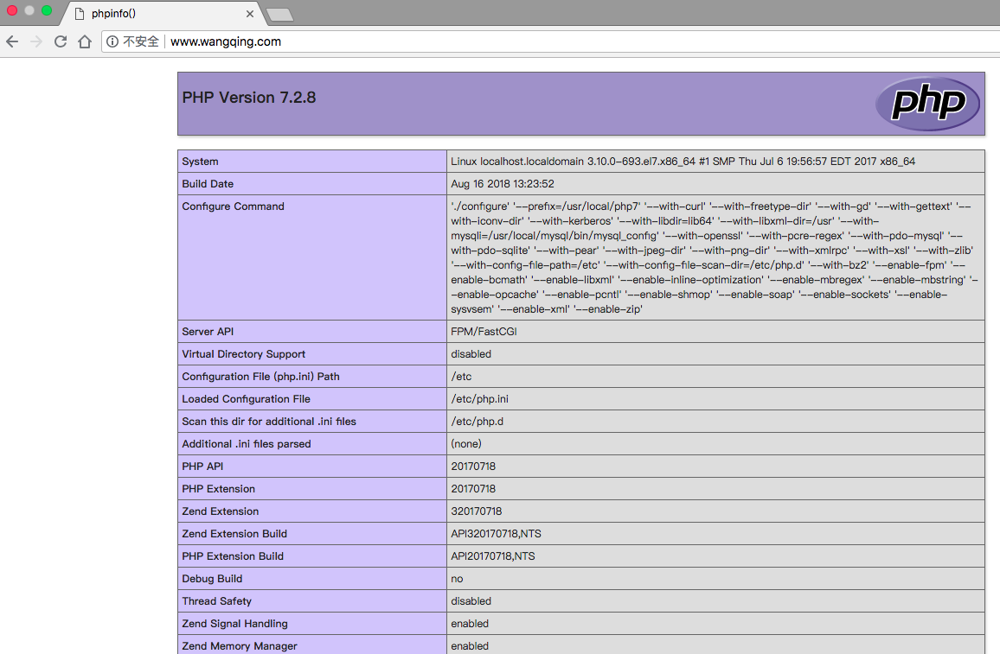

lamp
1. lamp简介
有了å‰�é�¢å¦ä¹ 的知识的铺å�«ï¼Œä»Šå¤©å�¯ä»¥æ�¥å¦ä¹ 下第一个常用的webæ�¶æ�„了。
所谓lamp，其å®�就是由Linux+Apache+Mysql/MariaDB+Php/Perl/Python的一组动æ€�网站或者æœ�务器的开æº�软件，除Linux外其它å�„部件本身都是å�„自独立的程åº�ï¼Œä½†æ˜¯å› ä¸ºç»�常被放在一起使用，拥有了越æ�¥è¶Šé«˜çš„兼容度，共å�Œç»„æˆ�了一个强大的Web应用程åº�å¹³å�°ã€‚
LAMP指的是Linux（æ“�作系统）ã€�Apache（HTTPæœ�务器）ã€�MySQL（也指MariaDB，数æ�®åº“软件）和PHP（有时也是指Perl或Python）的第一个å—æ¯�，一般用æ�¥å»ºç«‹web应用平å�°ã€‚
2. web�务器工作�程
在说lampæ�¶æ�„å¹³å�°çš„æ�建å‰�，我们先æ�¥äº†è§£ä¸‹ä»€ä¹ˆæ˜¯CGI，什么是FastCGI，什么是......
web�务器的资�分为两�，��资�和动�资�
- é�™æ€�资æº�就是指é�™æ€�内容，客户端ä»�æœ�务器è�·å¾—的资æº�的表ç�°å½¢å¼�ä¸�å�Ÿæ–‡ä»¶ç›¸å�Œã€‚å�¯ä»¥ç®€å�•çš„ç�†è§£ä¸ºå°±æ˜¯ç›´æ�¥å˜å‚¨äº�文件系统ä¸çš„资æº�
- 动�资�则通常是程�文件，需�在�务器执行之�，将执行的结�返�给客户端
那么webæœ�务器如何执行程åº�并将结æ�œè¿”å›�给客户端呢？下é�¢é€šè¿‡ä¸€å¼ 图æ�¥è¯´æ˜�一下webæœ�务器如何处ç�†å®¢æˆ·ç«¯çš„请求

如上图所示
阶段①显示的是httpd�务器（�apache）和php�务器通过FastCGI�议进行通信，且php作为独立的�务进程�行
阶段②显示的是php程åº�å’Œmysqlæ•°æ�®åº“间通过mysqlå��议进行通信。phpä¸�mysql本没有什么è�”系，但是由Phpè¯è¨€å†™æˆ�的程åº�å�¯ä»¥ä¸�mysql进行数æ�®äº¤äº’。å�Œç�†perlå’Œpython写的程åº�也å�¯ä»¥ä¸�mysqlæ•°æ�®åº“进行交互
2.1 cgi�fastcgi
上图阶段①ä¸æ��到了FastCGI，下é�¢æˆ‘们æ�¥äº†è§£ä¸‹CGIä¸�FastCGI。
CGI（Common Gateway Interface，通用网关æ�¥å�£ï¼‰ï¼ŒCGI是外部应用程åº�（CGI程åº�）ä¸�WEBæœ�务器之间的æ�¥å�£æ ‡å‡†ï¼Œæ˜¯åœ¨CGI程åº�å’ŒWebæœ�åŠ¡å™¨ä¹‹é—´ä¼ é€’ä¿¡æ�¯çš„过程。CGI规范å…�许Webæœ�务器执行外部程åº�，并将它们的输出å�‘é€�ç»™Webæµ�览器，CGIå°†web的一组简å�•çš„é�™æ€�超媒体文档å�˜æˆ�一个完整的新的交互å¼�媒体。
FastCGI（Fast Common Gateway Interface）是CGI的改良版，CGI是通过å�¯ç”¨ä¸€ä¸ªè§£é‡Šå™¨è¿›ç¨‹æ�¥å¤„ç�†æ¯�个请求，耗时且耗资æº�，而FastCGI则是通过master-workerå½¢å¼�æ�¥å¤„ç�†æ¯�个请求，å�³å�¯åŠ¨ä¸€ä¸ªmaster主进程，然å��æ ¹æ�®é…�ç½®å�¯åŠ¨å‡ 个worker进程，当请求进æ�¥æ—¶ï¼Œmaster会ä»�worker进程ä¸é€‰æ‹©ä¸€ä¸ªå�»å¤„ç�†è¯·æ±‚ï¼Œè¿™æ ·å°±é�¿å…�了é‡�å¤�的生æˆ�å’Œæ�€æ»è¿›ç¨‹å¸¦æ�¥çš„频ç¹�cpu上下文切æ�¢è€Œå¯¼è‡´è€—æ—¶
2.2 httpd�php结�的方�
httpd�php结�的方�有以下三�：
- modules：php将以httpd的扩展模å�—å½¢å¼�å˜åœ¨ï¼Œéœ€è¦�åŠ è½½åŠ¨æ€�资æº�时，httpdå�¯ä»¥ç›´æ�¥é€šè¿‡php模å�—æ�¥åŠ 工资æº�并返å›�给客户端
- httpd prefork：libphp5.so（多进程模�的php）
- httpd event or worker：libphp5-zts.so（线程模�的php）
- CGI：httpd需è¦�åŠ è½½åŠ¨æ€�资æº�时，通过CGIä¸�php解释器è�”系，è�·å¾—php执行的结æ�œï¼Œæ¤æ—¶httpdè´Ÿè´£ä¸�phpè¿�æ�¥çš„建立和æ–å¼€ç‰
- FastCGI：利用php-fpm机制，�动为�务进程，php自行�行为一个�务，https通过socket�php通信
较äº�CGIæ–¹å¼�，FastCGI更为常用，很少有人使用CGIæ–¹å¼�æ�¥åŠ 载动æ€�资æº�
2.3 web工作�程
通过上�的图说�一下web的工作�程：
- 客户端通过http�议请求web�务器资�
- webæœ�务器收到请求å��判æ–客户端请求的资æº�是é�™æ€�资æº�或是动æ€�资æº�
- 若是��资�则直��本地文件系统�之返�给客户端。
- å�¦åˆ™è‹¥ä¸ºåŠ¨æ€�资æº�则通过FastCGIå��è®®ä¸�phpæœ�务器è�”系，通过CGI程åº�çš„master进程调度worker进程æ�¥æ‰§è¡Œç¨‹åº�以è�·å¾—客户端请求的动æ€�资æº�，并将执行的结æ�œé€šè¿‡FastCGIå��议返å›�ç»™httpdæœ�务器，httpdæœ�务器收到php的执行结æ�œå��将其å°�装为httpå“�应报文å“�应给客户端。在执行程åº�è�·å�–动æ€�资æº�时若需è¦�è�·å¾—æ•°æ�®åº“ä¸çš„资æº�时，由Phpæœ�务器通过mysqlå��è®®ä¸�MySQL/MariaDBæœ�务器交互，å�–之而å��è¿”å›�ç»™httpd，httpdå°†ä»�phpæœ�务器收到的执行结æ�œå°�装æˆ�httpå“�应报文å“�应给客户端。
3. lamp平��建
�境说�：
| 系统平� | IP | 需�安装的�务 |
|---|---|---|
| centos7 redhat7 |
172.16.12.128 | httpd-2.4 mysql-5.7 php php-mysql |
lamp平�软件安装次�：
httpd --> mysql --> php
注�：php�求httpd使用prefork MPM
3.1 安装httpd
//YUM��置
[root@localhost ~]# rpm -ivh http://mirror.centos.org/centos/7/os/x86_64/Packages/wget-1.14-18.el7_6.1.x86_64.rpm
[root@localhost ~]# cd /etc/yum.repos.d/
[root@localhost yum.repos.d]# wget http://mirrors.163.com/.help/CentOS7-Base-163.repo
[root@localhost ~]# cd
[root@localhost ~]# sed -i 's/\$releasever/7/g' /etc/yum.repos.d/CentOS7-Base-163.repo
[root@localhost ~]# sed -i 's/^enabled=.*/enabled=1/g' /etc/yum.repos.d/CentOS7-Base-163.repo
[root@localhost ~]# yum -y install epel-release vim
//安装开�工具包
[root@localhost ~]# yum groups mark install 'Development Tools'
//创建apache�务的用户和组
[root@localhost ~]# groupadd -r apache
[root@localhost ~]# useradd -r -M -s /sbin/nologin -g apache apache
//安装�赖包
[root@localhost ~]# yum -y install openssl-devel pcre-devel expat-devel libtool gcc gcc-c++
//下载和安装apr以�apr-util
[root@localhost ~]# cd /usr/src/
[root@localhost src]# wget http://mirror.bit.edu.cn/apache/apr/apr-1.6.5.tar.gz
[root@localhost src]# wget http://mirror.bit.edu.cn/apache/apr/apr-util-1.6.1.tar.gz
[root@localhost src]# ls
apr-1.6.5.tar.gz apr-util-1.6.1.tar.gz debug kernels
[root@localhost src]# tar xf apr-1.6.5.tar.gz
[root@localhost src]# tar xf apr-util-1.6.1.tar.gz
[root@localhost src]# ls
apr-1.6.5 apr-1.6.5.tar.gz apr-util-1.6.1 apr-util-1.6.1.tar.gz debug kernels
[root@localhost src]# cd apr-1.6.5
[root@localhost apr-1.6.5]# vim configure
cfgfile="${ofile}T"
trap "$RM \"$cfgfile\"; exit 1" 1 2 15
# $RM "$cfgfile" //å°†æ¤è¡ŒåŠ ä¸Šæ³¨é‡Šï¼Œæˆ–è€…åˆ é™¤æ¤è¡Œ
[root@localhost apr-1.6.5]# ./configure --prefix=/usr/local/apr
�置过程略...
[root@localhost apr-1.6.5]# make && make install
编译安装过程略...
[root@localhost apr-1.6.5]# cd /usr/src/apr-util-1.6.1
[root@localhost apr-util-1.6.1]# ./configure --prefix=/usr/local/apr-util --with-apr=/usr/local/apr
�置过程略...
[root@localhost apr-util-1.6.1]# make && make install
编译安装过程略...
//编译安装httpd
[root@localhost ~]# cd /usr/src
[root@localhost ~]# wget http://mirror.bit.edu.cn/apache/httpd/httpd-2.4.38.tar.gz
[root@localhost ~]# ls
httpd-2.4.38.tar.gz
[root@localhost ~]# tar xf httpd-2.4.38.tar.gz
[root@localhost ~]# cd httpd-2.4.38
[root@localhost httpd-2.4.38]# ./configure --prefix=/usr/local/apache \
--sysconfdir=/etc/httpd24 \
--enable-so \
--enable-ssl \
--enable-cgi \
--enable-rewrite \
--with-zlib \
--with-pcre \
--with-apr=/usr/local/apr \
--with-apr-util=/usr/local/apr-util/ \
--enable-modules=most \
--enable-mpms-shared=all \
--with-mpm=prefork
[root@localhost httpd-2.4.38]# make && make install
编译安装过程略...
//安装��置
[root@localhost ~]# echo 'export PATH=/usr/local/apache/bin:$PATH' > /etc/profile.d/httpd.sh
[root@localhost ~]# source /etc/profile.d/httpd.sh
[root@localhost ~]# ln -s /usr/local/apache/include/ /usr/include/httpd
[root@localhost ~]# echo 'MANPATH /usr/local/apache/man' >> /etc/man.config
//�消ServerName��的注释
[root@localhost ~]# sed -i '/#ServerName/s/#//g' /etc/httpd24/httpd.conf
//�动apache
[root@localhost ~]# apachectl start
[root@localhost ~]# ss -antl
State Recv-Q Send-Q Local Address:Port Peer Address:Port
LISTEN 0 128 *:22 *:*
LISTEN 0 100 127.0.0.1:25 *:*
LISTEN 0 128 :::80 :::*
LISTEN 0 128 :::22 :::*
LISTEN 0 100 ::1:25 :::*
3.2 安装mysql
//安装�赖包
[root@localhost ~]# yum -y install ncurses-devel openssl-devel openssl cmake mariadb-devel
//创建用户和组
[root@localhost src]# groupadd -r -g 306 mysql
[root@localhost src]# useradd -r -M -s /sbin/nologin -g 306 -u 306 mysql
//ä¸‹è½½äºŒè¿›åˆ¶æ ¼å¼�çš„mysql软件包
[root@localhost ~]# cd /usr/src/
[root@localhost src]# wget https://downloads.mysql.com/archives/get/file/mysql-5.7.22-linux-glibc2.12-x86_64.tar.gz
//解�软件至/usr/local/
[root@localhost src]# ls
debug kernels mysql-5.7.22-linux-glibc2.12-x86_64.tar.gz
[root@localhost src]# tar xf mysql-5.7.22-linux-glibc2.12-x86_64.tar.gz -C /usr/local/
[root@localhost ~]# ls /usr/local/
bin games lib libexec sbin src
etc include lib64 mysql-5.7.22-linux-glibc2.12-x86_64 share
[root@localhost ~]# cd /usr/local/
[root@localhost local]# ln -sv mysql-5.7.22-linux-glibc2.12-x86_64/ mysql
‘mysql’ -> ‘mysql-5.7.22-linux-glibc2.12-x86_64/’
[root@localhost local]# ll
total 0
drwxr-xr-x. 2 root root 6 Mar 10 2016 bin
drwxr-xr-x. 2 root root 6 Mar 10 2016 etc
drwxr-xr-x. 2 root root 6 Mar 10 2016 games
drwxr-xr-x. 2 root root 6 Mar 10 2016 include
drwxr-xr-x. 2 root root 6 Mar 10 2016 lib
drwxr-xr-x. 2 root root 6 Mar 10 2016 lib64
drwxr-xr-x. 2 root root 6 Mar 10 2016 libexec
lrwxrwxrwx 1 root root 36 Aug 14 16:00 mysql -> mysql-5.7.22-linux-glibc2.12-x86_64/
drwxr-xr-x 9 root root 129 Aug 14 00:16 mysql-5.7.22-linux-glibc2.12-x86_64
drwxr-xr-x. 2 root root 6 Mar 10 2016 sbin
drwxr-xr-x. 5 root root 49 Jun 13 19:03 share
drwxr-xr-x. 2 root root 6 Mar 10 2016 src
//修改目录/usr/local/mysql的�主�组
[root@localhost ~]# chown -R mysql.mysql /usr/local/mysql
[root@localhost ~]# ll /usr/local/mysql -d
lrwxrwxrwx 1 mysql mysql 36 Aug 14 16:00 /usr/local/mysql -> mysql-5.7.22-linux-glibc2.12-x86_64/
//æ·»åŠ ç�¯å¢ƒå�˜é‡�
[root@localhost ~]# ls /usr/local/mysql
bin COPYING docs include lib man README share support-files
[root@localhost ~]# echo 'export PATH=/usr/local/mysql/bin:$PATH' > /etc/profile.d/mysql.sh
[root@localhost ~]# . /etc/profile.d/mysql.sh
[root@localhost ~]# echo $PATH
/usr/local/mysql/bin:/usr/local/sbin:/usr/local/bin:/usr/sbin:/usr/bin:/root/bin
//建立数æ�®å˜æ”¾ç›®å½•
[root@localhost mysql]# mkdir /opt/data
[root@localhost mysql]# chown -R mysql.mysql /opt/data/
[root@localhost mysql]# ll /opt/
total 0
drwxr-xr-x 2 mysql mysql 6 Aug 14 16:54 data
//�始化数�库
[root@localhost ~]# /usr/local/mysql/bin/mysqld --initialize --user=mysql --datadir=/opt/data/
2018-08-15T07:57:46.168380Z 0 [Warning] TIMESTAMP with implicit DEFAULT value is deprecated. Please use --explicit_defaults_for_timestamp server option (see documentation for more details).
2018-08-15T07:57:50.542516Z 0 [Warning] InnoDB: New log files created, LSN=45790
2018-08-15T07:57:50.927286Z 0 [Warning] InnoDB: Creating foreign key constraint system tables.
2018-08-15T07:57:51.071260Z 0 [Warning] No existing UUID has been found, so we assume that this is the first time that this server has been started. Generating a new UUID: e8600890-a060-11e8-b1a2-000c294c50b4.
2018-08-15T07:57:51.074566Z 0 [Warning] Gtid table is not ready to be used. Table 'mysql.gtid_executed' cannot be opened.
2018-08-15T07:57:51.078089Z 1 [Note] A temporary password is generatedfor root@localhost: jtBzkkb=r5ik
//请注æ„�，这个命令的最å��会生æˆ�一个临时密ç �，æ¤å¤„密ç �是jtBzkkb=r5ik
//å†�次注æ„�，这个密ç �是éš�æœºçš„ï¼Œä½ çš„ä¸�ä¼šè·Ÿæˆ‘ä¸€æ ·ï¼Œä¸€å®šè¦�è®°ä½�这个密ç �ï¼Œå› ä¸ºä¸€ä¼šç™»å½•æ—¶ä¼šç”¨åˆ°
//�置mysql
[root@localhost ~]# ln -sv /usr/local/mysql/include/ /usr/local/include/mysql
‘/usr/local/include/mysql’ -> ‘/usr/local/mysql/include/’
[root@localhost ~]# echo '/usr/local/mysql/lib' > /etc/ld.so.conf.d/mysql.conf
[root@localhost ~]# ldconfig
//生��置文件
[root@localhost ~]# cat > /etc/my.cnf <<EOF
[mysqld]
basedir = /usr/local/mysql
datadir = /opt/data
socket = /tmp/mysql.sock
port = 3306
pid-file = /opt/data/mysql.pid
user = mysql
skip-name-resolve
EOF
//�置�务�动脚本
[root@localhost ~]# cp -a /usr/local/mysql/support-files/mysql.server /etc/init.d/mysqld
[root@localhost ~]# sed -ri 's#^(basedir=).*#\1/usr/local/mysql#g' /etc/init.d/mysqld
[root@localhost ~]# sed -ri 's#^(datadir=).*#\1/opt/data#g' /etc/init.d/mysqld
//�动mysql
[root@localhost ~]# service mysqld start
Starting MySQL.. SUCCESS!
[root@localhost ~]# ps -ef|grep mysql
root 1521 1 0 01:58 pts/0 00:00:00 /bin/sh /usr/local/mysql/binmysqld_safe --datadir=/opt/data --pid-file=/opt/data/mysql.pid
mysql 1699 1521 0 01:58 pts/0 00:00:00 /usr/local/mysql/bin/mysqld --basedir=/usr/local/mysql --datadir=/opt/data --plugin-dir=/usr/local/mysql/lib/plugin --user=mysql --log-error=localhost.localdomain.err --pid-file=/opt/data/mysql.pid --socket=/tmp/mysql.sock --port=3306
root 1734 1301 0 01:59 pts/0 00:00:00 grep --color=auto mysql
[root@localhost ~]# ss -antl
State Recv-Q Send-Q Local Address:Port Peer Address:Port
LISTEN 0 128 *:22 *:*
LISTEN 0 100 127.0.0.1:25 *:*
LISTEN 0 128 :::22 :::*
LISTEN 0 100 ::1:25 :::*
LISTEN 0 80 :::3306 :::*
//修改密ç �
//使用临时密ç �登录
[root@localhost ~]# mysql -uroot -p
Enter password:
Welcome to the MySQL monitor. Commands end with ; or \g.
Your MySQL connection id is 2
Server version: 5.7.22
Copyright (c) 2000, 2018, Oracle and/or its affiliates. All rights reserved.
Oracle is a registered trademark of Oracle Corporation and/or its
affiliates. Other names may be trademarks of their respective
owners.
Type 'help;' or '\h' for help. Type '\c' to clear the current input statement.
mysql>
//设置新密ç �
mysql> set password = password('wangqing123!');
Query OK, 0 rows affected, 1 warning (0.00 sec)
mysql> quit
Bye
3.3 安装php
//�置yum�
[root@localhost ~]# wget http://rpms.remirepo.net/enterprise/remi-release-7.rpm
[root@localhost ~]# rpm -Uvh remi-release-7.rpm
[root@localhost ~]# yum makecache --enablerepo=remi-php74
//安装�赖包
[root@localhost ~]# yum -y install libxml2 libxml2-devel openssl openssl-devel bzip2 bzip2-devel libcurl libcurl-devel libicu-devel libjpeg libjpeg-devel libpng libpng-devel openldap-devel pcre-devel freetype freetype-devel gmp gmp-devel libmcrypt libmcrypt-devel readline readline-devel libxslt libxslt-devel mhash mhash-devel php72-php-mysqlnd
安装过程略....
//下载php
[root@localhost ~]# cd /usr/src/
[root@localhost src]# wget http://cn.php.net/distributions/php-7.2.8.tar.xz
下载过程略....
//编译安装php
[root@localhost src]# tar xf php-7.2.8.tar.xz
[root@localhost src]# cd php-7.2.8
[root@localhost php-7.2.8]# ./configure --prefix=/usr/local/php7 \
--with-config-file-path=/etc \
--enable-fpm \
--enable-inline-optimization \
--disable-debug \
--disable-rpath \
--enable-shared \
--enable-soap \
--with-openssl \
--enable-bcmath \
--with-iconv \
--with-bz2 \
--enable-calendar \
--with-curl \
--enable-exif \
--enable-ftp \
--with-gd \
--with-jpeg-dir \
--with-png-dir \
--with-zlib-dir \
--with-freetype-dir \
--with-gettext \
--enable-json \
--enable-mbstring \
--enable-pdo \
--with-mysqli=mysqlnd \
--with-pdo-mysql=mysqlnd \
--with-readline \
--enable-shmop \
--enable-simplexml \
--enable-sockets \
--enable-zip \
--enable-mysqlnd-compression-support \
--with-pear \
--enable-pcntl \
--enable-posix
[root@localhost php-7.2.8]# make -j $(cat /proc/cpuinfo |grep processor|wc -l)
编译过程略
[root@localhost php-7.2.8]# make install
安装过程略
//安装��置
[root@localhost ~]# echo 'export PATH=/usr/local/php7/bin:$PATH' > /etc/profile.d/php7.sh
[root@localhost ~]# source /etc/profile.d/php7.sh
[root@localhost php-7.2.8]# which php
/usr/local/php7/bin/php
[root@localhost php-7.2.8]# php -v
PHP 7.2.8 (cli) (built: Aug 16 2018 13:27:30) ( NTS )
Copyright (c) 1997-2018 The PHP Group
Zend Engine v3.2.0, Copyright (c) 1998-2018 Zend Technologies
//�置php-fpm
[root@localhost php-7.2.8]# cp php.ini-production /etc/php.ini
[root@localhost php-7.2.8]# cp sapi/fpm/init.d.php-fpm /etc/init.d/php-fpm
[root@localhost php-7.2.8]# chmod +x /etc/rc.d/init.d/php-fpm
[root@localhost php-7.2.8]# cp /usr/local/php7/etc/php-fpm.conf.default /usr/local/php7/etc/php-fpm.conf
[root@localhost php-7.2.8]# cp /usr/local/php7/etc/php-fpm.d/www.conf.default /usr/local/php7/etc/php-fpm.d/www.conf
//编辑php-fpm的�置文件（/usr/local/php7/etc/php-fpm.conf）：
//é…�ç½®fpmçš„ç›¸å…³é€‰é¡¹ä¸ºä½ æ‰€éœ€è¦�的值：
[root@localhost ~]# vim /usr/local/php7/etc/php-fpm.conf
.....
.....
pm.max_children = 50 ;最多�时�供50个进程�供50个并��务
pm.start_servers = 5 ;�动时�动5个进程
pm.min_spare_servers = 2 ;最�空闲进程数
pm.max_spare_servers = 8 ;最大空闲进程数
[root@localhost ~]# tail /usr/local/php7/etc/php-fpm.conf
; file.
; Relative path can also be used. They will be prefixed by:
; - the global prefix if it's been set (-p argument)
; - /usr/local/php7 otherwise
include=/usr/local/php7/etc/php-fpm.d/*.conf
pm.max_children = 50
pm.start_servers = 5
pm.min_spare_servers = 2
pm.max_spare_servers = 8
//�动php-fpm
[root@localhost ~]# service php-fpm start
Starting php-fpm done
//默认情况下，fpm监å�¬åœ¨127.0.0.1çš„9000端å�£ï¼Œä¹Ÿå�¯ä»¥ä½¿ç”¨å¦‚下命令验è¯�其是å�¦å·²ç»�监å�¬åœ¨ç›¸åº”的套æ�¥å—
[root@localhost ~]# ss -antl
State Recv-Q Send-Q Local Address:Port Peer Address:Port
LISTEN 0 128 *:22 *:*
LISTEN 0 100 127.0.0.1:25 *:*
LISTEN 0 128 127.0.0.1:9000 *:*
LISTEN 0 128 :::80 :::*
LISTEN 0 128 :::22 :::*
LISTEN 0 100 ::1:25 :::*
LISTEN 0 80 :::3306 :::*
[root@localhost ~]# ps -ef|grep php
root 81070 1 0 14:13 ? 00:00:00 php-fpm: master process (/usr/local/php7/etc/php-fpm.conf)
nobody 81071 81070 0 14:13 ? 00:00:00 php-fpm: pool www
nobody 81072 81070 0 14:13 ? 00:00:00 php-fpm: pool www
nobody 81073 81070 0 14:13 ? 00:00:00 php-fpm: pool www
nobody 81074 81070 0 14:13 ? 00:00:00 php-fpm: pool www
nobody 81075 81070 0 14:13 ? 00:00:00 php-fpm: pool www
root 81079 83354 0 14:15 pts/1 00:00:00 grep --color=auto php
3.4 �置apache
3.4.1 �用代�模�
在apache httpd 2.4以å��å·²ç»�专门有一个模å�—针对FastCGIçš„å®�ç�°ï¼Œæ¤æ¨¡å�—为mod_proxy_fcgi.so，它其å®�是作为mod_proxy.so模å�—çš„æ‰©å±•ï¼Œå› æ¤ï¼Œè¿™ä¸¤ä¸ªæ¨¡å�—都è¦�åŠ è½½ï¼Œç¼–è¾‘httpd.conf文件，å�–消以下两行内容的注释:
- LoadModule proxy_module modules/mod_proxy.so
- LoadModule proxy_fcgi_module modules/mod_proxy_fcgi.so
//�用httpd的相关模�
[root@localhost ~]# sed -i '/proxy_module/s/#//g' /etc/httpd24/httpd.conf
[root@localhost ~]# sed -i '/proxy_fcgi_module/s/#//g' /etc/httpd24/httpd.conf
3.4.2 �置虚拟主机
在需è¦�使用fcgi的虚拟主机ä¸æ·»åŠ 类似如下两行：
ProxyRequests Off //å…³é—æ£å�‘代ç�†
ProxyPassMatch ^/(.*\.php)$ fcgi://127.0.0.1:9000/PATH/TO/DOCUMENT_ROOT/$1
例如：
ProxyPassMatch ^/(.*\.php)$ fcgi://127.0.0.1:9000/var/www/html/idfsoft.com/$1
以上设置表示把以.php结尾的文件请求å�‘é€�到php-fpm进程，php-fpm至少需è¦�知é�“è¿�行的目录和URI，所以这里直æ�¥åœ¨fcgi://127.0.0.1:9000å��指æ˜�了这两个å�‚数，其它å�‚æ•°çš„ä¼ é€’å·²ç»�被mod_proxy_fcgi.so进行了å°�装，ä¸�需è¦�手动指定。
注�：
这里写的/var/www/html/是yumæº�安装方å¼�生æˆ�的网页å˜æ”¾ç›®å½•ï¼Œè¿™é‡Œå¿…须改æˆ�ä½ ç¼–è¯‘å®‰è£…æŒ‡å®šçš„ç½‘é¡µå˜æ”¾è·¯å¾„，ç¦�æ¢ç›´æ�¥å¤�制我这里的路径
这里的idfsoft.com是域å��ï¼Œä½ å¿…é¡»æ”¹æˆ�ä½ æ‰€ä½¿ç”¨çš„åŸŸå��，ç¦�æ¢ç›´æ�¥å¤�制æ¤å¤„的域å��
这里的$1表示匹�所有以.php结尾的http请求
//创建虚拟主机目录并生�php测试页�
[root@localhost ~]# mkdir /usr/local/apache/htdocs/wangqing.com
[root@localhost ~]# cat > /usr/local/apache/htdocs/wangqing.com/index.php <<EOF
<?php
phpinfo();
?>
EOF
[root@localhost ~]# chown -R apache.apache /usr/local/apache/htdocs/
[root@localhost ~]# ll /usr/local/apache/htdocs/ -d
drwxr-xr-x 3 apache apache 44 Aug 16 14:50 /usr/local/apache/htdocs/
[root@localhost ~]# vim /etc/httpd24/httpd.conf
//在é…�置文件的最å��åŠ å…¥ä»¥ä¸‹å†…å®¹
<VirtualHost *:80>
DocumentRoot "/usr/local/apache/htdocs/wangqing.com"
ServerName www.wangqing.com
ProxyRequests Off
ProxyPassMatch ^/(.*\.php)$ fcgi://127.0.0.1:9000/usr/local/apache/htdocs/wangqing.com/$1
<Directory "/usr/local/apache/htdocs/wangqing.com">
Options none
AllowOverride none
Require all granted
</Directory>
</VirtualHost>
[root@localhost ~]# vim /etc/httpd24/httpd.conf
//æ�œç´¢AddTypeï¼Œæ·»åŠ ä»¥ä¸‹å†…å®¹
# If the AddEncoding directives above are commented-out, then you
# probably should define those extensions to indicate media types:
#
AddType application/x-compress .Z
AddType application/x-gzip .gz .tgz
AddType application/x-httpd-php .php #æ·»åŠ æ¤è¡Œ
AddType application/x-httpd-php-source .phps #æ·»åŠ æ¤è¡Œ
[root@localhost ~]# sed -i '/ DirectoryIndex/s/index.html/index.php index.html/g' /etc/httpd24/httpd.conf
//��apache�务
[root@localhost ~]# apachectl stop
[root@localhost ~]# apachectl start
[root@localhost ~]# ss -antl
State Recv-Q Send-Q Local Address:Port Peer Address:Port
LISTEN 0 128 *:22 *:*
LISTEN 0 100 127.0.0.1:25 *:*
LISTEN 0 128 127.0.0.1:9000 *:*
LISTEN 0 128 :::80 :::*
LISTEN 0 128 :::22 :::*
LISTEN 0 100 ::1:25 :::*
LISTEN 0 80 :::3306 :::*
3.5 验�
1.修改/etc/hostsæ–‡ä»¶ï¼Œæ·»åŠ åŸŸå��ä¸�IPçš„æ˜ å°„
2.在æµ�览器上使用域å��访问，若看到以下界é�¢åˆ™è¡¨ç¤ºlampæ�¶æ�„æ�建æˆ�功，å�¦åˆ™è¯·æ£€æŸ¥ä½ çš„æ“�作

作业
1.手动æ�建lampæ�¶æ�„
2.写�客
3.写脚本æ�建lampæ�¶æ�„